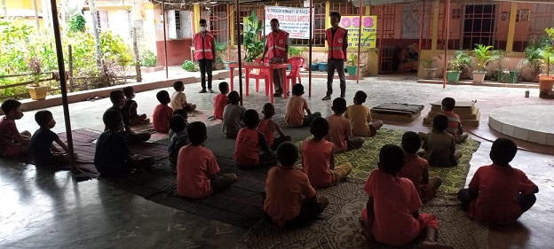

Indian Red Cross Society Tripura State Branch
Our Activities in Tripura
We have floated Expression of Interest seeking applications from the Wards of the Covid -19 orphans from the families belonging to the marginalized section of society for continuance of their studies till the level of graduation or for a period of 5 years, whichever is less in collaboration with the Tata AIG General Insurance Company. It is a first time initiative of the Tripura State Branch.
We have arranged accommodation for the people belonging to the marginalized section of society for short duration stay in the Red Cross Society facilities in Chennai at a 50% discount rate in the face of the fact that large number of people quite often visits Hospitals in Chennai for availing of tertiary medical care for their family members. This arrangement made with the help of the Tamilnadu Red Cross has been a hugely popular and successful initiative.
COVID-19 RELIEF
- We have allowed the Tripura Medical College (TMC) & Dr. BRAM Teaching hospital at Agartala (Declared as the dedicated Covid-19 hospital) to use one of our ambulances for ferrying patients during this period of pandemic who are escorted to Agartala by train for better treatment.
- 25 of the 40 Oxygen Concentrator machines received as gift from the Oppo Cell phone Company were handed over to the Tripura Medical College authorities for emergency use by the Covid-19 patients admitted in to the said Hospital which was declared as the dedicated Covid -19 Hospital of Tripura.
- All the District Red Cross Offices are provided with 2 Oxygen Concentrator (OC) machines each for local use,
free of any cost after circulating detailed guidelines. - Emergency usage of the Oxygen concentrator machines was allowed free of any cost for the people living within the city limit of the Agartala Municipal Corporation and thus saved lives of umpteen people, which was an unprecedented support in the face of Covid -19 crises.
- Very large number of reaching out activities were carried out to the people in distress with supply of face masks, sanitizers, Hygiene kits , hand washing soaps, Sarees & Dhotis, plastic buckets and blankets across the state.
- Two special programmes of outreaching works were carried out for exhorting the Cremators working in the Crematorium of Agartala city for their services at the time of acute distress due to Covid-19 pandemic.
BLOOD DONATION & HEALTH CAMPS:
- One Blood donation camp has been organized at Sonamura under Sepahijala District in the month of June, 2021. It is however a fact that administering of Covid-19 vaccines to a record number of people including those belonging to the 18-45 age groups has impacted the blood donation process since a time gap of about 60 days is being followed for a person to become eligible to donate blood after receipt of the vaccine regime.
- Organized voluntary blood donation camp at Ramthakur Seva Mandir, Ram Nagar Rd. No. 4 where 27 units of blood were collected for eventual transportation of collected Blood.
- During Durga puja festival roadside camps were organized at Agartala to provide relief and fast aid to the pilgrims visiting puja pandals.
- Organized free health camp and volunteers services round the clock during Diwali Mela at Matarbari temple complex, Udaipur
- Organized motivational Camp on voluntary blood donation at Ambedkar College located at Fatikroy, near Kumarghat in collaboration of Youth Red Cross (YRC) Unit
- At our request the Assam Rifles jointly held a programme with us for reaching out to the people at Khilpara under Gomati district to support villagers in distress due to Covid-19.
FIRST AID TRAINING:
- The State Branch has also decided to arrange training in association with the Indian Medical Association (IMA) Tripura State Branch of the First Aiders (Female & Male) to develop trained manpower for every Gram Panchayat of Tripura as per directives received from the NHQ. Development and deployment of this trained man power in course of time is expected to change the health care scenario of the State for ever. This initiative is also unique and being implemented for the first time in Tripura.
- In association with the District Administration of West Tripura we organized mock drill for rescue to safety & security of the people facing disaster in the likely event of earth quake attack at Agartala, Mandwi& Belbari including training on first aids.
ADOPTION OF VILLAGE:
- The State Branch has decided to declare the Maiganga Gram Panchayat under the Khowai district to be the Red Cross village for its adoption as a model for providing critical health care as per norm on receipt of confirmation from the IRCS (NHQ)
WOMEN EMPOWEREMENT:
- Distributed very large number of Hygiene kits to the girl students in various schools of Khowai, Unakoti and Dhalai and West Tripura districts.
- Distribution of large number of Hygiene kits was organized in 3 slum areas of the Agartala Municipal Corporation areas in presence of the Municipal Corporators.
DISTRIBUTION OF BLANKETS:
- Distributed Blankets and Bedsheets ( 100 each) to the Orphan children of Anneweshaa Child protection centre at Usha bazaar Agartala on the 15th December, 2021.
- Distributed Blankets & Bed Sheets to the Dialysis patients using the facilities of the Dialysis Units of the TMC Medical College, IGM Hospital & AGMC & GBP Hospital in December 2021.
AWARENESS :
- Participated in the Block level awareness programme on DisasterManagement and First Aid organized by the West Tripura District Administration in Mandwai, Jirania, Old Agartala , Dukli , Mohanpur and Hezamara Block areas.